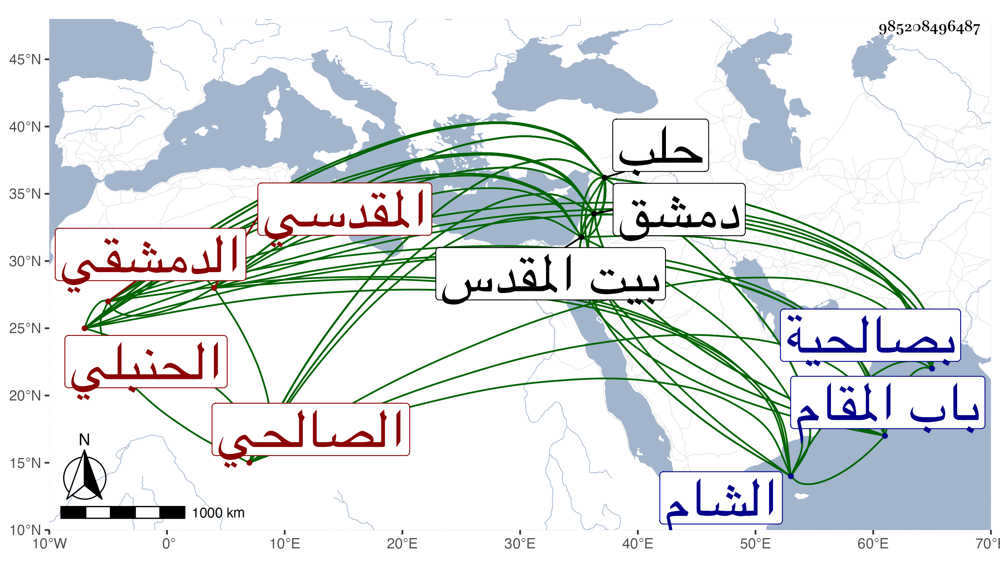

0902Sakhawi.DawLamic.ITO20230111-ara1.EIS1600.985208496487
Biography ID: 985208496487
672
علي بن أبي بكر بن إبراهيم بن محمد بن مفلح بن محمد بن مفرج العلاء حفيد التقي أبي عبد الله بن الشمس صاحب الفروع المقدسي ثم الدمشقي الصالحي الحنبلي والد الصدر عبد المنعم وقريب إبراهيم بن محمد بن الشرف عبد الله الماضيين وابن أخي النظام عمر الآتي ويعرف كسلفه بابن مفلح . ولد سنة خمس عشرة وثمانمائة بصالحية دمشق ونشأ بها فقرأ القرآن عند الشمس بن كاتب الغيبة وسالم وغيرهما وحفظ المقنع والملحة وغيرهما وعرض على عم والده الشرف عبد الله بن مفلح والعز البغدادي المقدسي وعن الشرف المذكور وغيره أخذ الفقه بل وسمع عليه في الحديث وأجاز له ابن المحب الأعرج والتاج بن بردس وغيرهما وناب في القضاء بدمشق عن عمه وبالقاهرة عن البدر البغدادي ثم استقل بقضاء حلب وتكرر له ولايتها وكذا ولي كتابة السر بالشام في أول سنة ثلاث وستين عوضا عن الخيضري ثم انفصل عنها بعد سنتين به وولي قضاءها مرة بعد أخرى ثم نظر الجيش بحلب ، وحج وزار بيت المقدس مرارا ، لقيته بحلب وغيرها وحمدت لقيه واحتشامه . وكان إنسانا حسنا متواضعا كريما متوددا خبيرا بالأحكام ذا إلمام بطريق الوعظ وكذا بالعلم في الجملة أقام بحلب منفصلا عن القضاء وغيره نحو ثلاث سنين حتى مات شهيدا بالبطن بل وبالطاعون بعد إقامته نحو خمسين يوما متعللا في عشية ليلة السبت عاشر صفر سنة اثنتين وثمانين وصلي عليه من الغد بالجامع الكبير في محفل تقدمهم أبو ذر بن البرهان بوصية منه ودفن ظاهر باب المقام رحمه الله وإيانا .
